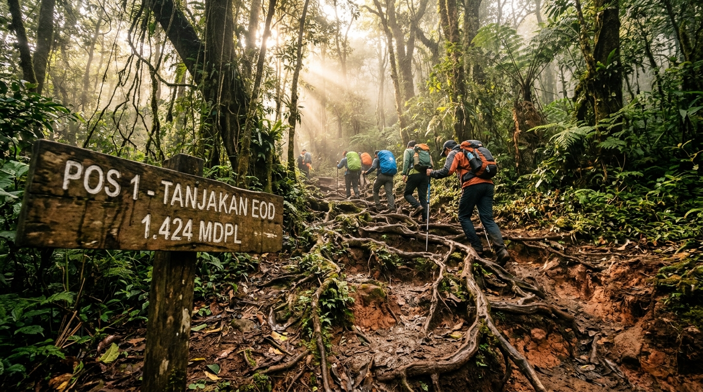
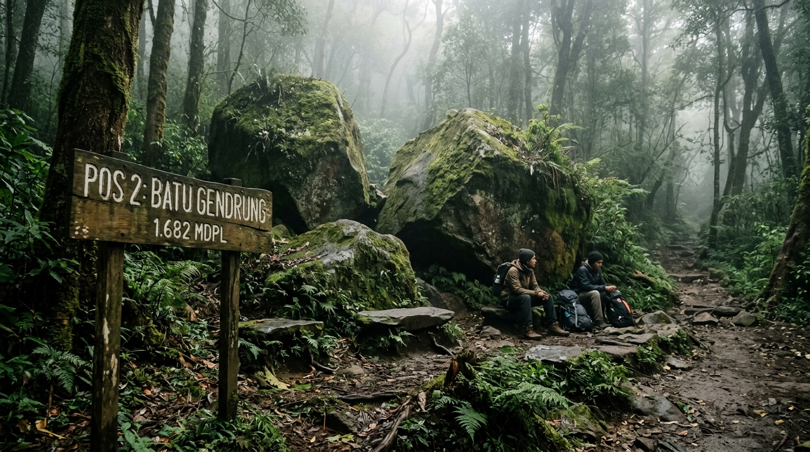
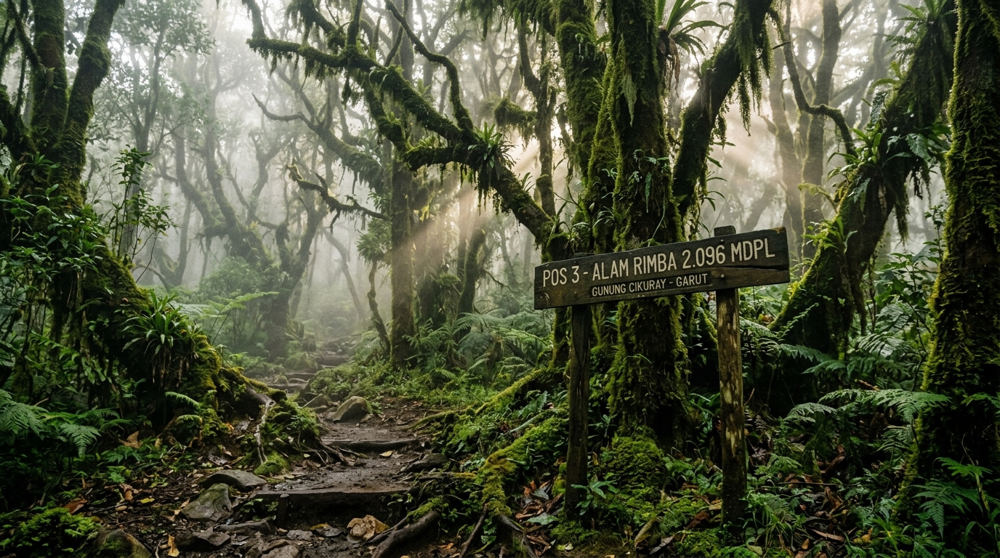
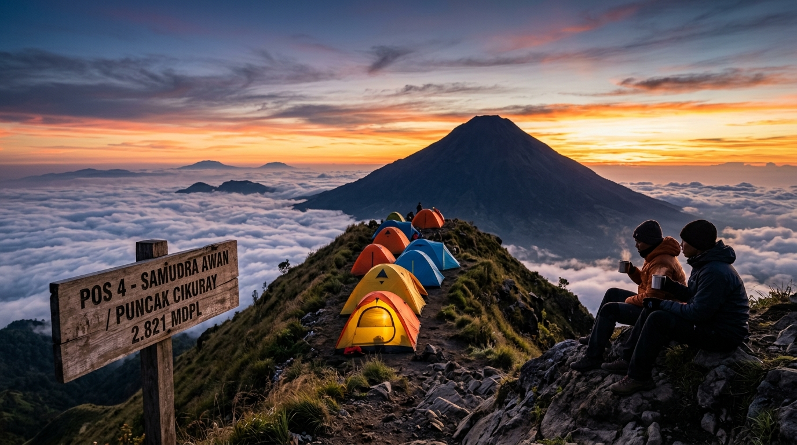

Rute pendakian resmi via Cigedug dengan kontur khas tanah berakar, vegetasi hutan lumut lebat, dan lokasi perkemahan dengan lanskap samudra awan menghadap Gunung Papandayan & Guntur.
Pengelola Resmi Jalur Pendakian Gunung Cikuray via Cigedug, Kab. Garut.
Slogan Komunitas SAMSARA Cigedug • Mandat Konservasi Hutan & Keselamatan Pendaki
SAMSARA (Satuan Anak Muda Sadar Alam) adalah kelompok pemuda lokal Cigedug yang mendedikasikan diri untuk pengelolaan jalur pendakian Gunung Cikuray. Kami fokus pada keselamatan pendaki, pemeliharaan marka rute, konservasi tanaman cantigi, dan penerapan ketat aturan bawa pulang sampah.
Rute SAMSARA menyuguhkan karakter pendakian Cikuray yang sesungguhnya: tanjakan konsisten tanpa bonus berlebih, naungan pohon yang sejuk, batuan purba di Pos 2, hutan lumut eksotis di Pos 3, dan area camp terlindung di Pos 4 sebelum summit attack.
Pemeriksaan logistik bawaan di basecamp. Jumlah bungkus makanan/minuman yang dibawa naik wajib sama saat turun.
Pembersihan berkala jalur akar, penandaan arah reflektif untuk pendakian malam, dan pemeliharaan sumber air.
Memberdayakan warga desa Cigedug yang paham betul karakter cuaca, jalur alternatif, dan evakuasi darurat.
Informasi faktual medan, estimasi waktu tempuh normal, ketersediaan air, dan foto dokumentasi lapangan di setiap pos pendakian.

1.424 MDPL PerbesarEOD (End of Days) adalah pos pertama setelah batas kebun teh Cigedug. Medan didominasi tanjakan tanah padat dengan sulur-sulur akar pohon yang rapat sebagai pijakan kaki alami. Pos ini menjadi titik adaptasi pertama bagi pendaki sebelum memasuki hutan yang lebih lebat.

1.682 MDPL PerbesarDinamai berdasarkan formasi batuan vulkanik andesit besar berlumut yang menyerupai alat tetabuhan tradisional. Tempat ini merupakan shelter alami yang teduh dan terlindung dari terpaan angin lereng, sangat ideal untuk istirahat makan siang atau rehidrasi.

2.096 MDPL PerbesarMemasuki elevasi 2.000 mdpl, hawa udara menurun signifikan dan kelembapan meningkat. Dikelilingi pepohonan cantigi tua berselimut lumut hijau tebal. Terdapat percabangan jalan menuju mata air lembah (sekitar 50 meter) yang menjadi sumber air bersih terakhir sebelum puncak.

2.257 MDPL PerbesarBumi perkemahan utama yang disarankan oleh pengelola SAMSARA. Lokasinya berada di punggungan terbuka menghadap ke timur, menawarkan pemandangan spektakuler hamparan samudra awan saat matahari terbit. Dari sini, perjalanan summit attack menuju puncak memakan waktu sekitar 1,5 hingga 2 jam.
Data koordinat riil jalur Cigedug (836 titik GPS) dapat ditinjau melalui citra satelit atau topografi tanpa watermark.
Peralatan standar keselamatan gunung yang wajib diperiksa petugas Basecamp SAMSARA sebelum izin pendakian (SIMAKSI) diterbitkan.
*Pemeriksaan fisik logistik dan peralatan dilakukan oleh petugas ranger di meja registrasi SIMAKSI.
Koordinasi evakuasi, info update cuaca puncak, atau booking porter lokal via kontak resmi basecamp.
Hubungi WhatsApp Ranger SAMSARAHitung rincian biaya retribusi resmi dan teruskan data rombongan secara langsung ke WhatsApp Admin Basecamp SAMSARA.